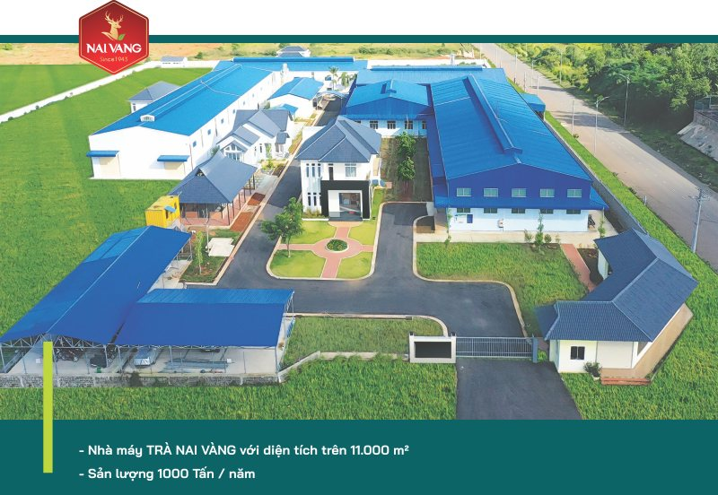
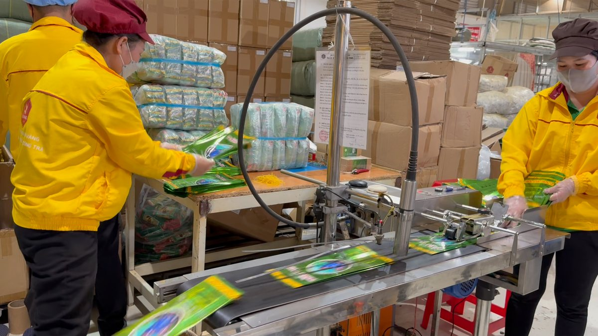

Sản xuất khép kín trên diện tích hơn 11.000m², sản lượng 1.000 tấn/năm tại KCN Lộc Sơn, Bảo Lộc.
Công ty TNHH Trà Nai Vàng đầu tư hệ thống dây chuyền sản xuất tiên tiến, kiểm soát nghiêm ngặt mọi khâu — từ thu hoạch, chọn lọc nguyên liệu đến ướp hương, kiểm định và đóng gói. Nhà máy chính đặt tại Lô CN7, KCN Lộc Sơn, P. Lộc Sơn, TP. Bảo Lộc, Lâm Đồng.

Quy trình khép kín, đội ngũ chuyên nghiệp, máy móc hiện đại — bảo đảm chất lượng từng lô trà.
Toàn bộ hệ thống máy móc hiện đại phục vụ chế biến, ướp hương, sấy, định lượng và đóng gói tại nhà máy Nai Vàng.
Tuyển búp trà đạt chuẩn từ vùng chè cao nguyên Bảo Lộc.
Loại tạp chất, phân loại nguyên liệu theo cấp độ.
Ướp hoa lài, sói, ngâu, sâm dứa theo bí quyết gia truyền.
Sao sấy kiểm soát nhiệt độ, giữ dưỡng chất và hương vị.
Kiểm tra an toàn thực phẩm từng lô theo tiêu chuẩn FSSC 22000.
Đóng gói kín hương, lưu kho đạt điều kiện bảo quản.
Với năng lực sản xuất lớn và quy trình chuẩn hóa, Nai Vàng nhận gia công OEM/ODM, cung cấp nguyên liệu trà cho nhà máy, quán trà sữa, doanh nghiệp và đối tác xuất khẩu.

Lô CN7, KCN Lộc Sơn, P. Lộc Sơn, TP. Bảo Lộc, Lâm Đồng · Hotline 0855 256 512